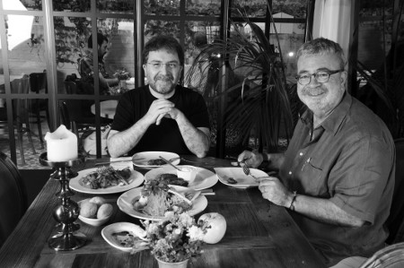

“Yemek kursuna gidersem Balat’ta kahveye almazlar”
Çocukluğunuzun mutfağından aklınızda kalanlarla başlayalım...
Babam devlet memuruydu, dolayısıyla Anadolu’nun çeşitli yerlerinde, birbirine uzak bölgelerde görev yaptı; mesela Doğubeyazıt’ta, Ağrı’da, Balıkesir’de, Çanakkale’de. Onun için çocukluğum Anadolu’nun çeşitli yerlerindeki yerel lezzetleri tadarak geçti. Unutamadığım çok enteresan yemeklerle karşılaştım, mesela Doğubeyazıt’ta abdigor köftesi diye bir köfte vardı. Hatırladığım kadarıyla hazırlanma şekli ilginçti. Etin sinir kısımlarını döverek bir top haline getiriyorlar ve sıcak suda haşlayarak pişiriyorlardı. Kürtlere özgü, farklı bir yemekti.
Anneniz iyi bir aşçı mıdır?
Çok iyi bir aşçıdır. Benim bu yerel tatlardan haberdar olmam, annemin bir gördüğü yemeği hemen yapabilme becerisiyle yakından alakalı. Her gittiğimiz yerde yeni yemekler öğrenir ve başarıyla icra ederdi. Mesela, Trabzonlu birilerinin evine gitmiştik, orada bize hamsili pilav ikram etmişlerdi, annem hemen onun tarifini alıp hamsili pilav yapmıştı. Eskiden yemek kitaplarıyla falan uğraştığına göre, yemek yaparken kitap kullanırdı diyebilirim, ama sonradan onları da bıraktı, göz kararıyla yapmaya başladı.
O dönemde anneninizin en çok hangi yemeğini severdiniz?
Annem et yemeklerini çok güzel yapardı, mesela fırında patatesli yapılan bir yemek vardı, onu çok güzel yapardı. Zeytinyağlı yaprak sarmasını çok güzel yapardı. Annem Yozgatlı ama kendi yöresinin yemeklerinden çok, başka yörelerin yemeklerini yapmayı çok severdi. Öğrenip de benimsediği yemekleri çok güzel yapardı. Bir de ıspanaklı börek ve hamur işlerinde ustaydı. Haşhaşlı ve cevizli çöreği çok lezzetli pişirirdi.
Annenizin yemeklerini hâlâ yiyor musunuz?
Yemez olur muyum. Arada bir benim için zeytinyağlı yaprak sarması sarar, yanında haşhaşlı cevizli çörekten koyar ve gönderir.
Babanız mutfağa girer miydi?
Girmez, babamın öyle bir yeteneği hiç yoktur. Sofranın kurulmasına falan yardımcı olur, centilmen bir erkektir ama o kadar, iyi bir pişirici değildir.
Sizin mutfakla aranız nasıl?
Ben yumurtayı bile kıramayanlardanım. Vallahi ben o konuda yeteneğim olup olmadığımı bilemiyorum, çünkü yetenek biraz insanın kendini denemesiyle ilgili. Belki de körelmiş bir yetenekten ya da bir kabiliyet düşmanlığından bahsediyoruz; bilemiyorum, hiç üzerine gitmedim. Neden gitmedim? Fırsat olmadı, ilk zamanlar hayat mücadelesiyle geçti, şimdi kendimi rahat hissediyorum ama artık geç kaldığımı düşünüyorum. Müziğe ilgisi olup da bir türlü fırsat bulamayıp kırklı, ellili yaşlarından sonra ellerine bir şeyler alıp tıngırdatan adamların durumuna düşeceğimden endişe ediyorum.
İsmet İnönü altmışından sonra İngilizce öğrendi. Mutfağa girseniz belki harikalar yaratacaksınız...
O tür örnekler de var tabii ki. Aslında zaman zaman bir yemek kursuna falan gitsem diye düşünmüyor değilim, ama arkadaşlar beni Balat’ta kahveye almazlar diye de çekiniyorum, karizmam çizilir diye korkuyorum.
Yoğun gündemden boğulduğunuzda yemeğe sığınır mısınız?
Ben yemek düşkünü, kendisini yemeğe vurarak sakinleşenlerden değilim, ama keyifli bir sofra, güzel yemeklerden de hoşlanırım tabii. Bunalımlarımı yemeklere sığınarak gidermiyorum.
Yalnız yaşıyorsunuz, yemek işlerini evde nasıl hallediyorsunuz?
Şimdi iki üç türlü hallediyorum: Birincisi, evde yemek yapan bir yardımcım var ki çok güzel yemek yapıyor. Zeytinyağlıları çok iyi pişiriyor. Sağlıklı beslenmek istediğim zaman ona başvuruyorum. İkincisi, kaçamak yapmak istediğim zaman Yemek Sepeti sitesinden yemek ısmarlıyorum. Üçüncüsü de, sık sık dışarıda yemek yiyorum.
Peki, Yemek Sepeti’nden gelen yemekleri ısıtmayı becerebiliyor musunuz?
Yok yok yemekler sıcak geliyor. Zaten yirmi dakika içinde geliyor, çok başarılı bir servis ağı var. Bu konuda ödüller de almış. İyi bir site ve oraya bağlı olan restoranlar da o servisi büyük bir titizlikle hallediyorlar.
Eve yemeğe konuk geldiğinde ne yapıyorsunuz?
Arada bir yemek davetleri de veriyorum, o zaman yardımcım Tülay harikalar yaratıyor, herkes çok beğeniyor. Ben kabaca ne yapacağını söylüyorum, o detaylarıyla hallediyor. Yaratıcı tarafları olan birisi; bir de ben ona yemek kitapları veriyorum, onları da okuyor, onların üzerinden kendine göre birtakım yemekler yaratıyor. Davet çok kalabalık olursa, yardımcı birilerini de buluyoruz, ancak çok sık yaptığımız bir şey değil.
En sevdiğiniz ve “hiç yemem” dediğiniz yemekler hangileri?
Hiç yemem dediğim yemekler, bütün yatılı mekteplerde okumuşların hafızalarında kötü izler bırakan, pırasa ve bamya. En sevdiğim yemeklerse balık; ızgara balık, kalkan. Et ve tavuk yemeklerini de severim, ama balığa daha düşkünüm.
Bir günlük beslenme maceranızı anlatır mısınız?
Düzenli ve sağlıklı besleniyorum. Sabah kalktığımda peynir, yumurta, domates, salatalık gibi malzemelerle, çok fazla abartılı olmayan küçük bir kahvaltı yapıyorum. Öğlen mutlaka sulu bir sebze yemeği yiyorum. Akşam ise bir yere gitmeyeceksem tavuklu bir şeyler yiyorum. Yemeğe çok düşkün biri değilim; sağlıklı ve düzenli beslenmeye gayret ediyorum.
Yatılı okuldan bugüne beslenme alışkanlıklarınızda ne gibi değişiklikler oldu?
Büyük değişiklikler oldu, o zamanlar daha abur cuburlarla besleniyordum, daha “bulduğun yerde ye” şeklindeydim; şimdi daha düzenli, tertipli beslenme şeklim var. Geçen yıllarla birlikte beslenme şeklime bir düzen geldi diyebilirim.
Lezzetli yemek yapan kadınlar sizi etkiler mi?
Etkiler; onu önemserim, çünkü ben yapamadığım, bilemediğim için bu bana muhteşem bir şey gibi gelir. Bunu yapabilenin de benim gözümde değeri yükselir. Sadece kadınlar değil erkekler de yani, mesela aşçılar, gıptayla bakarım kendilerine. Çok yaratıcı bir iş. Bu durum, keman çalmayı bilmeyen birinin, keman çalan birini hayranlıkla dinlemesi gibi bir şey.
Bugüne kadar kimlerden etkilendiniz, somut isim verebilir misiniz?
En başta annemden etkilendim. Ayrıca, New York’ta aşçılık eğitimi almış bir arkadaşım vardı, hatta bizim bir daveti de o düzenlenmişti, onun yaptığı yemekten çok etkilenmiştim. Borsa Lokantası’nın aşçılarının yaptıkları yemekler beni çok etkiler, onların hiç boşu yok, pişirdikleri her yemeği çok lezzetli buluyorum.
Yazı yazarken bir şeyler atıştırdığınız oluyor mu?
Sürekli Türk kahvesi içerim, bir şey yemem. Günde on fincana yakın kahve yapılır, ama bir iki yudum alır bırakırım; ben o sıcaklığı seviyorum.
Genellikle dışarıda da yemek yiyorsunuz; hep aynı mekâna mı gidersiniz?
Ben genelde dadanan bir tipim, değişik yerlerde yemek yeme çabasında değilim. Bir yerde yemek yemiş ve hoşlanmışsam oraya devamlı giderim. Fakat ondan sonra oradan bıkar, yeni yerler keşfetmeye başlarım. Gittiğim yerin beni hoşnut etmesi için en başta yemeklerinin lezzetli olması, sonra sunumunun düzgünlüğü, mekânın ortamı benim için çok önemli. Çok lezzetli bir yemek olabilir, ancak sunumu iyi değilse hoşnut kalamam.
Peki, sokak yemekleriyle aranız nasıl?
En sevdiğim yemekler, sokak yemekleridir ve onları denemeyi de çok severim. Salaş yerleri de çok severim, Anadolu mutfağını da çok severim. Düzenli olarak gittiğim yer yok ama mesela, İstanbul’da, en güzel tavuklu pilavı yapan seyyar satıcı, Fatih’te İMÇ’nin hemen önündekidir. Bazen programdan çıktığımda, oraya gidip tavuklu pilav attırdığım olur yani.

Sakatat ve tatlıyla aranız nasıl?
Sakatatları çok yemişliğim vardır ama meraklısı değilim. Tatlı ise en sevdiğim yiyecek türü. En sevdiğim tatlılar ise baklava ve künefedir. Künefeyi güzel yapan yer İstanbul’da çok azdır, bulmak için çaba sarf ederim. Fener’de iyi yapılır. Sufleyi, tartı da çok severim; galiba ağır tatlıları seviyorum. Yemekten sonra mutlaka tatlı yerim, yoksa bir eksiklik hissederim.
Bu kadar tatlı yiyorsunuz, formunuzu nasıl koruyorsunuz?
Fazla yemek yediğimi düşündüğüm zamanlar birkaç gün kendimi çekerim, ağır yemekler yemem. Günde bir saat yürüyüş bandında yürüyüş yapıyorum. Sokakta çok yürümüyorum; bazen Nişantaşı’ndan Tünel’e kadar gidip orada kafede oturup sonra dönüyorum. Bu güzergâh çok güvenli değil. Bazen Boğaz’a çıktığım da oluyor, ama genelde evde yürüme bandını kullanıyorum. Haftanın beş günü birer saat yürüyorum.
Diyet reçeteleri hakkında ne düşünüyorsunuz?
Hiçbir sözüm yok, hiçbir zaman dikkate almadım, uymadım; bunların böyle küçük küçük detaylarla, ayrıntılarla yapılabileceğine inanmıyorum ben. Diyetin daha kabaca yapılması gerektiğini düşünüyorum. Bir hayat tarzı olması lazım yani, bir de o detaylara uyma fikri benim hoşuma gitmiyor; hoş bir şey değil, insanı geriyor.
Eleştirilere sıkıldığınızda bir şey yemek gibi huyunuz var mı?
Yok, buna çok anlam veremiyorum. İnsanların sıkıldıklarında, bunaldıklarında, strese girdiklerinde yemek yemelerini de anlamıyorum. Bende durum böyle olmuyor, tam tersi iştahım kesiliyor.
Hangi yörelerin yemekleri ağzınızı sulandırır?
Siirt’in büryan kebabı, benim en favori yemeklerimdendir. Bunu yemek için Fatih’teki Kadınlar Pazarı’ndaki Şeref’e giderim; çok başarılı yapıyorlar. Antep yemeklerini severim; lahmacundan kebaba kadar hepsi favorimdir. Gaziantep yemeklerini yemek için Kadıköy’deki Çiya’ya giderim. Edirne’nin yaprak ciğerini çok severim. Yemek Sepeti sitesinde yaprak ciğer yapan çok güzel bir yer keşfettim, oradan arada sırada söylüyorum. İstanbul çok enteresan bir yer; artık İstanbul’da da Anadolu yemeklerini çok başarılı yapan yerler var, yeter ki keşfedebilelim. Bunlar için de, sizin gibilerin önerilerine bakıyorum.
Keşif gezilerine çıktığınıza göre yapmasanız da yemeğe düşkün olduğunuz anlaşılıyor.
Evet, lezzet keşiflerine çıkıyorum, eğer bu düşkünlük işaretiyse evet yemeğe düşkünüm. Yerel yemeğin hâlâ bir gelenek halinde sürdürülüyor olmasından hoşlanıyorum. Yani bir büryan kebabı geleneğinin, İstanbul’un ortasında sürüyor olması beni heyecanlandırıyor.
Dünya mutfaklarıyla aranız nasıl?
Çok iyidir, dünya mutfaklarını da çok severim. Mesela, bütün Türkler gibi İtalyan mutfağını severim. Meksika, Çin mutfağını, suşiyi severim. Bunun dışında Lübnan, İran mutfaklarına da düşkünüm.
Siyasileri eleştirmek mi, yemeği eleştirmek mi zor?
Yemeği eleştirmek daha zor. Çünkü Türkiye’de eleştiri kültürü çok gelişmemiş olduğu için, eleştiri hep bir düşmanlık gibi algılanır. Bizde yemeğin ticari tarafı olunca, eleştiri o ticarete vurulan bir balta gibi kullanılıyor. Eğer bir restorana gidip oranın yemeğini beğenmezseniz, onu da yazarsanız, adamın bütün ticari hayatını etkileyebilirsiniz. Dolayısıyla yemeği eleştirmek Türkiye’de çok zor bir şey, sinemada da böyle. Bizim en eleştiriye açık olan kurumsal yapımız siyaset. Hiç olmazsa orada iyi kötü bir eleştiri geleneği var. Onun için siyaseti eleştirmek, yemeği eleştirmekten daha kolay. Bir de bir insanın büyük emekler vererek yaptığı yemeği sofraya getirip koyduğunda ve eleştirdiğinizde, bunun ne kadar büyük reaksiyon gördüğünü fark ettim. O yüzden küçük, minik, çikolataya sarılmış eleştirilerle işi idare etmeye çalışıyorum. Çünkü yemeği yapan adamın, yaptığı yemeğe olan inancı ve hassasiyeti çok yüksektir. Onu idare etmek lazım.
Gece kalkıp buzdolabından bir şeyler tırtıkladığınız oluyor mu?
Olmuyor, öyle bir huyum yok. Belki gece küçük abur cuburlar, bir gofret olabilir. Dolabı açıp bir şeyler yemem yani. Bir de bir şeyi ısıtıp yemek zor gelir bana.
Kimlerle yemek yemek size keyif veriyor?
Kafa dengi, gülmeye ve mizaha yatkın, kasmayan tiplerle yemek yemek hoşuma gider. Bir de kalabalık olacağız, böyle ortamda yemek yemeye bayılırım yani. Mesela, gazeteci arkadaşlarla, meslektaşlarımla yemek yemeyi severim, medya dedikodusu yaparak yemek yemek keyifli olabilir. Bir de siyasetçilerle, çok resmi olmamak şartıyla yemek yemeyi severim. Arkadaşlarımla yemek yemeyi de çok severim, her zaman bir yerlere gideriz.
Yemek yemek için siyasilerle sık sık buluştuğunuz oluyor mu?
Ankara’da da burada da sık sık buluşuyorum, bu tür fırsatları kaçırmamaya çalışıyorum. Hem mesleki açıdan yardımcı oluyor, hem onların dünyaya bakışını daha rahat algılayabiliyorsun.
Favori yemek mekânlarınız var mı?
Sunset bir numara, hem ortam, hem yemekler çok iyi. Mikla, Ulus 29, Papermoon favorilerimdir. Bunların haricinde, yerel yemeklerin yapıldığı yerlere de giderim. Nişantaşı’nda oturuyorum, bu bölgedeki restoranlara hem de kafelere sık sık giderim.
(10 Temmuz 2011)